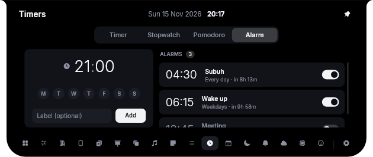
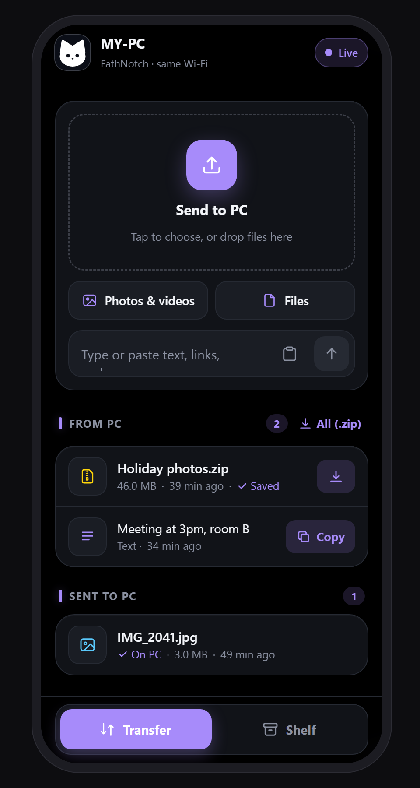
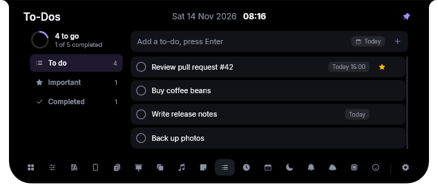
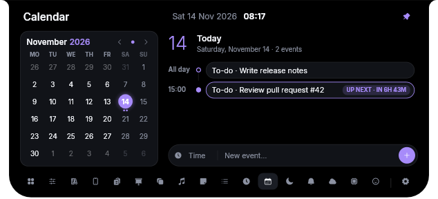
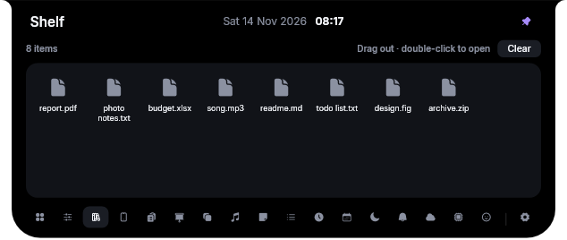
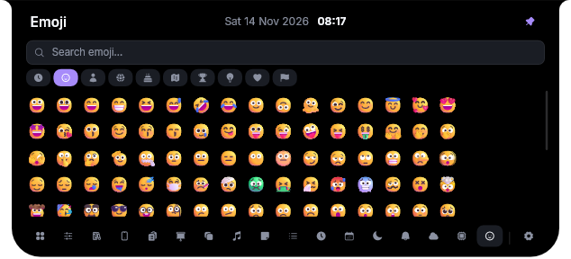
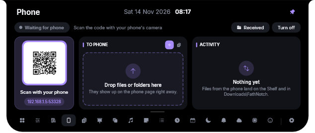
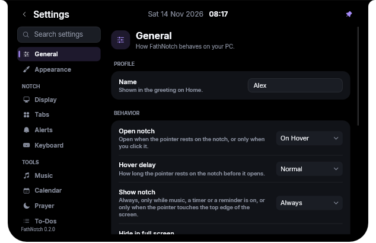

A dynamic island
for Windows.
A small black pill at the top of your screen that shows what's happening, opens into a panel of tools, and morphs into a capsule for alerts. Written in Rust, light enough to forget it's running.
Features
Everything at a glance, nothing in the way.
The pill sits quietly above your windows. Hover or click to open it, glance at it when something happens, and forget about it the rest of the time.
Live closed pill
Pick what it shows: clock, weather, next prayer, open to-dos, battery. While music plays it shows the song, or a synced karaoke-style lyric line.
Alerts that morph
Caps and Num Lock, keyboard layout, volume and brightness, network, Bluetooth, power, Windows notifications, reminders and prayer times.
A panel of tools
To-dos, calendar, timers and alarms, prayer times, music, shelf, clipboard, phone transfer, system monitor and more, one tab each.
Make it yours
17 color schemes, dark and light, 16 accents, an optional translucent panel, and animation speed from Off to Slow.
Fast and light
One layered window drawn with Direct2D. At rest the UI thread sleeps; while something moves it draws once per display refresh, then stops.
Private by design
Everything stays on your PC. Secrets are protected with Windows DPAPI, and the phone link only works on your local network.
Prayer times, computed on your PC
Pick your city once; the times are calculated locally with your chosen method.
- The next prayer with a live countdown
- The sun's path spaced by the clock, crossing the horizon at sunrise and Maghrib
- An alert with a chime when each prayer comes, plus an optional heads-up 5 to 30 minutes before

Timers and alarms that don't give up
Timer, stopwatch with laps, Pomodoro and alarms share one tab and one clock-face time picker.
- Any length, to the minute; scroll on a time to nudge it
- Repeat alarms on chosen days
- An alarm keeps ringing until you snooze or stop it

Phone transfer
Send files both ways. No app needed.
Turn on Phone and scan the QR code with your phone's camera. A page opens in its browser: send photos, files and text to the PC, or download what you dropped on the notch. It uses the same colors as the app and follows your accent live.
Tools
One panel, seventeen tools.
Show only the ones you use, in the order you like.
Screenshots
A closer look.
Click any picture to see it larger.






Install
Up and running in a minute.
No installer and no runtime. Your settings and data live in %LOCALAPPDATA%\FathNotch.
Download
Get FathNotch.exe from the latest release.
Run it
The notch appears at the top of your main display, and a cat icon appears in the tray.
Keep it
Optional: Settings → General → Open at login. To update, quit from the tray and replace the exe.
Build from source
Needs Rust (stable). The GNU toolchain works, so Visual Studio isn't required. The only dependencies are the windows crate and serde.
# clone and build git clone https://github.com/CFathurrohman/FathNotch.git cd FathNotch cargo build --release # → target\release\fathnotch.exe
FAQ
Questions about FathNotch
Is FathNotch free?
Yes. FathNotch is free and open source under the MIT license.
Which versions of Windows does FathNotch run on?
Windows 10 and Windows 11. It is a single exe with no installer and no runtime to install.
Does FathNotch slow down my PC?
No. At idle it uses about 16 MB of memory and 0 % CPU; it only draws while something animates.
Why does Windows SmartScreen warn about FathNotch?
The app is not code-signed, so Windows may warn the first time. Choose More info, then Run anyway, or build it from source.
Does FathNotch send my data anywhere?
No. Everything stays on your PC in %LOCALAPPDATA%\FathNotch, secrets are protected with Windows DPAPI, and the phone link only works on your local network.